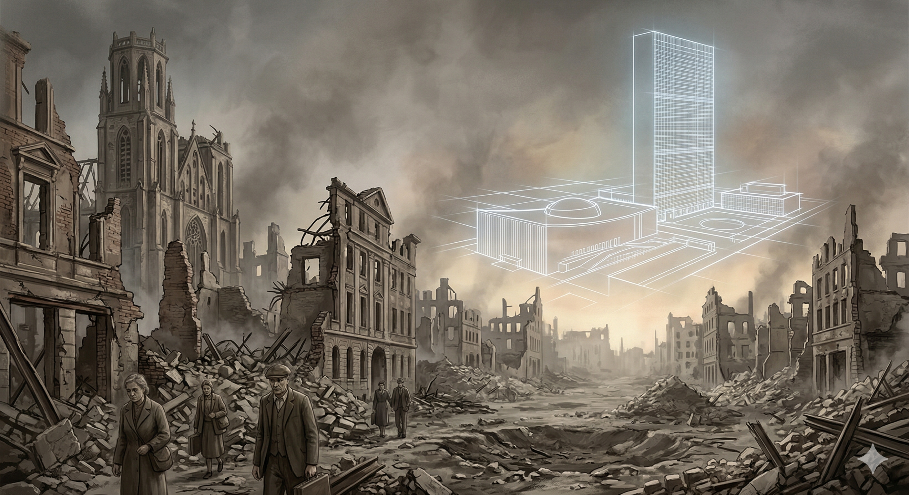
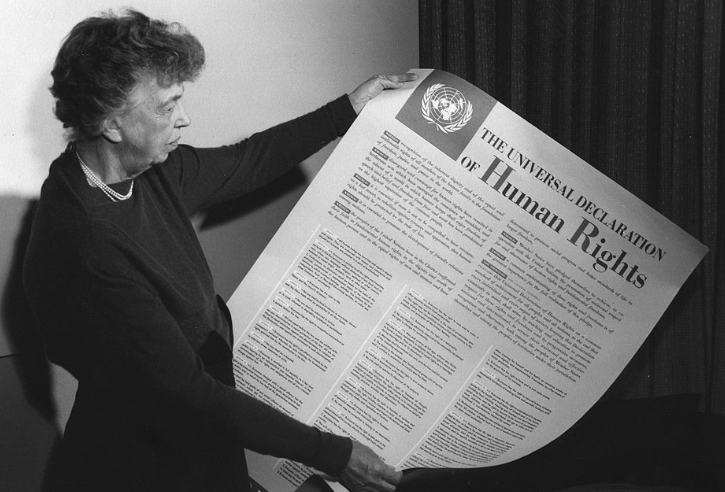
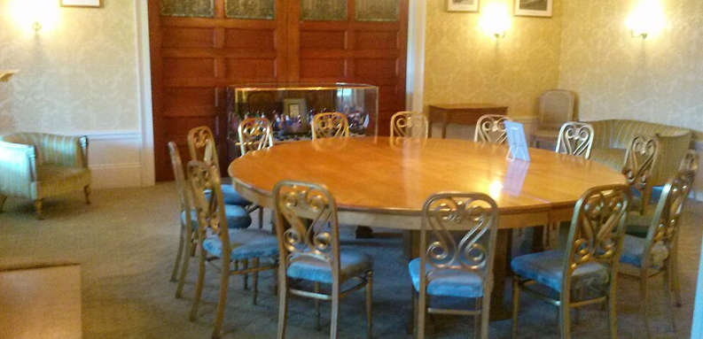
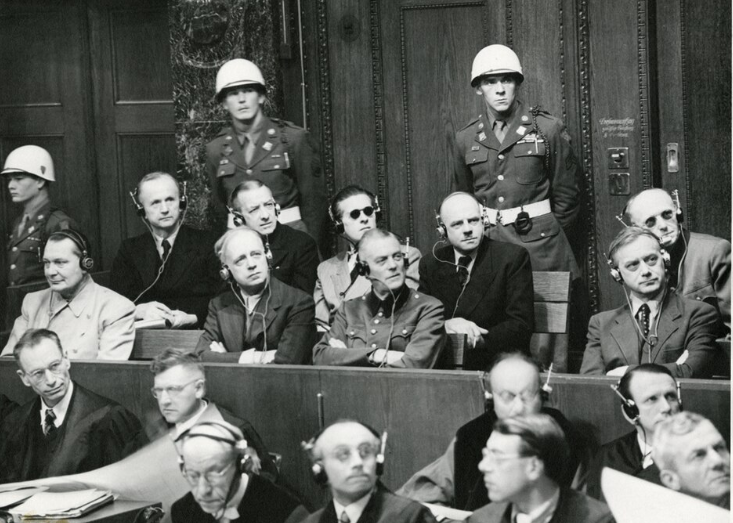
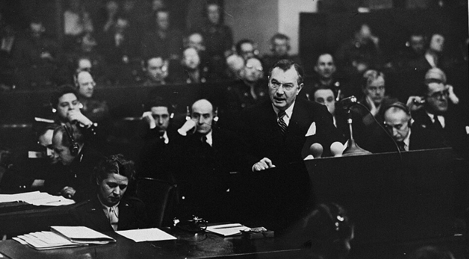
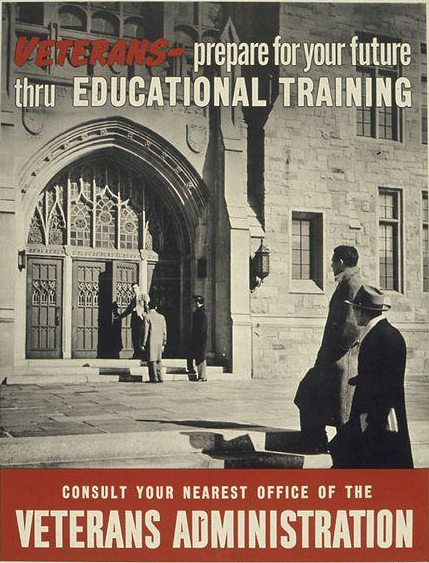
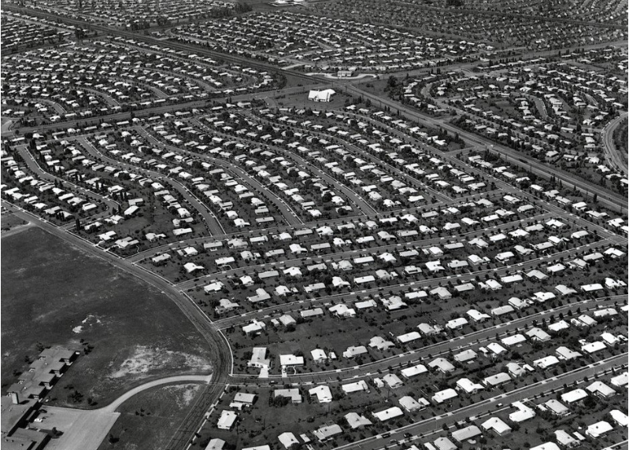
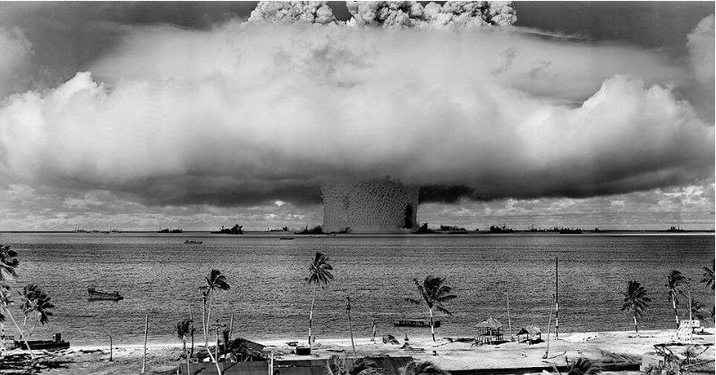
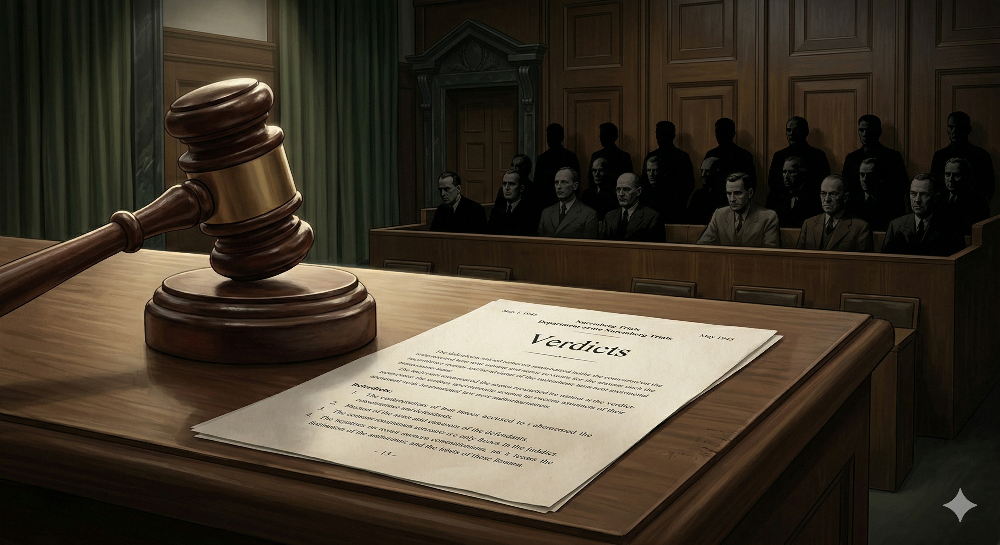

Core Objectives
- Compare the structure and enforcement powers of the United Nations (Security Council) with the failed League of Nations.
- Analyze the legal precedents established by the Nuremberg Trials regarding individual responsibility and "crimes against humanity."
- Evaluate the geopolitical implications of the U.S. nuclear monopoly and the economic restructuring of the world (Bretton Woods).
Key Terms
United Nations | UN Security Council | General Assembly | Eleanor Roosevelt | Universal Declaration of Human Rights | Nuremberg Trials | Crimes Against Humanity | G.I. Bill of Rights (Servicemen's Readjustment Act) | Bretton Woods System | IMF (International Monetary Fund) | World Bank | Superpower
Introduction: Forging a New World Order from the Ashes of War
As the devastation of World War II came to a close in 1945, the Allied powers faced the monumental task of rebuilding a shattered globe and preventing future global conflicts. Rejecting the isolationism and failed policies of the past, the United States emerged as a preeminent global superpower, taking the lead in designing a new architecture for international peace and economic stability. This era saw the creation of ambitious institutions like the United Nations to mediate disputes and protect human rights, alongside financial systems designed to foster global interdependence. Meanwhile, groundbreaking legal tribunals redefined international justice, and transformative domestic policies reshaped the American middle class. Together, these profound shifts established the foundational structures of the modern world, even as the dawn of the atomic age threatened a fragile new peace.

The transition from total war to global governance required unprecedented international cooperation, replacing the failed isolationist policies of the pre-war era with robust institutions designed to mediate conflict and stabilize economies.
Analysis Question: How did the scale of destruction in World War II alter global attitudes toward political isolationism?
Constructing a Global Peace Framework
Following the widespread destruction of World War II, international leaders recognized the urgent need for a robust system of cooperation to replace the ineffective League of Nations. The United States spearheaded the creation of the United Nations, a dual-structured organization balancing the democratic voice of the General Assembly with the enforcement power of the Security Council. Beyond preventing war, this new framework sought to codify international moral standards, championing human rights and asserting that individual dignity was a matter of global concern.
The Architecture of International Peace
As the smoke cleared from the battlefields of Europe and the Pacific in 1945, the leaders of the Allied powers found themselves standing amidst a world that had been fundamentally shattered. Tens of millions were dead, entire cities had been reduced to rubble, and the global economy had collapsed. In this moment of profound crisis, there was a shared realization that the "old world" of secret treaties, colonial empires, and isolationism had failed. To prevent a third and potentially final world war, a new system of international cooperation was required. The United States, emerging from the conflict as the world's preeminent Superpower, took the leading role in designing this new international framework. This was a radical departure from the post-World War I era, when the U.S. had retreated into isolationism, a move that many now believed had allowed the rise of Hitler and Mussolini.
The cornerstone of this new architecture was the United Nations, an organization officially established in June 1945 during a conference in San Francisco. The UN was not merely a forum for debate; it was intended to be a robust mechanism for maintaining global security and facilitating international law. The planners of the UN were deeply mindful of the failures of the League of Nations, which had lacked both the participation of the United States and the authority to enforce its own resolutions. To correct these weaknesses, the UN was designed with a dual structure that attempted to balance democratic participation with realistic power dynamics. The General Assembly served as the democratic heart of the organization, providing every member nation with a voice and a vote. It was here that global issues ranging from poverty to environmental protection would be discussed, and where the organization’s budget and administrative functions would be managed.
The War Memorial Veterans Building in San Francisco, where delegates from fifty nations signed the founding charter of the United Nations in 1945.
Why it Matters: The creation of a new international organization signaled a definitive end to American isolationism. It established a framework designed to maintain global security and facilitate international law, reflecting a commitment to prevent the catastrophic diplomatic failures that allowed the rise of totalitarian regimes prior to World War II.
Student Question: How did the establishment of the United Nations mark a departure from the foreign policy stance the United States maintained after World War I?
Checkpoint
1. Why did the United States take a leading role in creating the United Nations after World War II?
The Security Council and Human Rights
However, the true "teeth" of the United Nations resided in the UN Security Council. This body was granted the unique authority to investigate disputes, impose economic sanctions, and, most significantly, authorize the use of military force to repel aggression. The Security Council was composed of eleven members, five of whom held permanent seats: the United States, the Soviet Union, Great Britain, France, and China. These "Permanent Five" were granted the power of a veto over any substantive resolution. This veto was a pragmatic recognition that for the UN to succeed, the world’s major military powers had to be in agreement. If the U.S. or the USSR were opposed to a UN action, forcing it through would likely lead to a direct conflict between them, destroying the organization in the process. While the veto was often criticized for causing gridlock, it ensured that the UN remained a platform for negotiation among the most powerful states on Earth.
Beyond the prevention of war, the United Nations sought to establish a universal moral standard for the treatment of all human beings. This mission was driven by Eleanor Roosevelt, who served as the first chairperson of the UN Commission on Human Rights. In the wake of the Holocaust, Roosevelt and her colleagues recognized that state sovereignty could no longer be used as a shield for the systematic abuse of citizens. In 1948, the UN adopted the Universal Declaration of Human Rights. This landmark document asserted that all people possess inherent rights to life, liberty, and security of person, regardless of their nationality or the laws of their country. Although the declaration was not a legally binding treaty, it provided a powerful moral baseline that would inspire civil rights and independence movements for decades. The UN thus became the architect of a "new world" where the safety and dignity of the individual were, for the first time, matters of international concern.

Eleanor Roosevelt holds a poster-sized copy of the Universal Declaration of Human Rights in late 1949.
Why it Matters: The adoption of this landmark document represented a historic consensus that individual human dignity was a matter of global concern, transcending the boundaries of state sovereignty. It provided a powerful moral baseline that formally condemned systemic state abuses and inspired subsequent civil rights and independence movements worldwide.
Student Question: In what ways did the adoption of the Universal Declaration of Human Rights challenge traditional notions of state sovereignty?
Checkpoint
1. Which power is uniquely held by the "Permanent Five" members of the UN Security Council?
Engineering a Stable Global Economy
Convinced that the economic desperation of the Great Depression had fueled the rise of fascism, Allied leaders sought to build a cooperative international financial architecture. Meeting in 1944, delegates established a system that pegged global currencies to the gold-backed U.S. dollar, effectively positioning the American economy as the engine of worldwide recovery. To manage this new era of globalization, permanent institutions were created to provide emergency capital and fund long-term reconstruction, fostering an interdependent world heavily influenced by American capitalism.
The Bretton Woods System
Parallel to the political construction of the United Nations was an equally ambitious effort to rebuild and stabilize the global financial system. The Allied leaders believed that the Great Depression of the 1930s had been a primary driver of the war; economic collapse had created the desperation that allowed fascists to seize power through promises of work and national glory. To prevent a return to the "beggar-thy-neighbor" trade policies and currency devaluations that had crippled the pre-war economy, representatives from 44 nations gathered at a resort in New Hampshire in 1944. This meeting, known as the Bretton Woods System conference, sought to create a new international financial architecture based on cooperation rather than competition.
The centerpiece of the Bretton Woods System was a radical plan to stabilize global currencies. The conference agreed that the value of all member nations' currencies would be pegged to the American dollar, which was in turn backed by gold. This effectively made the U.S. dollar the world's primary reserve currency, a status that reflected the reality that the American economy was the only major industrial engine left standing after the war. This system provided the stability needed for international trade to flourish; merchants and governments could now conduct business across borders with the certainty that the value of their money would not fluctuate wildly overnight. This was the birth of the modern globalized economy, where the financial health of one nation was intricately tied to the stability of the others.
The Mount Washington Hotel in New Hampshire served as the gathering place for delegates from forty-four nations during the 1944 monetary conference.
Why it Matters: The financial architecture established in New Hampshire pegged global currencies to the gold-backed U.S. dollar, effectively making the United States the anchor of the post-war economy. This system aimed to prevent the competitive currency devaluations and trade wars that exacerbated the Great Depression, laying the groundwork for a deeply interconnected global market.
Student Question: What economic conditions from the 1930s prompted the allied nations to create a cooperative financial system pegged to the U.S. dollar?
Checkpoint
1. Why did Allied leaders meet at Bretton Woods in 1944?
Global Economic Stabilization
To manage and protect this new system, the conference established two permanent international institutions: the IMF (International Monetary Fund) and the World Bank. The IMF was designed as a "lender of last resort." Its primary mission was to provide short-term loans to countries experiencing sudden currency crises or trade deficits. By providing this emergency capital, the IMF prevented nations from having to resort to the protective tariffs and trade barriers that had proved so destructive during the 1930s. The World Bank, on the other hand, was focused on long-term reconstruction and development. Its initial priority was providing the massive amounts of capital needed to rebuild the shattered infrastructures of Western Europe and Japan. Later, it shifted its focus toward funding infrastructure projects in developing nations, such as dams, roads, and electrical grids.
These institutions represented a "New Deal for the World," applying the principles of managed capitalism and government oversight on a global scale. The goal was to ensure that the post-war world would be one of interdependence rather than isolation. The success of the Bretton Woods System was almost immediate; it facilitated the "economic miracles" of recovery in West Germany and Japan and allowed for an unprecedented era of economic growth in the United States. However, it also cemented American dominance of the global financial order. Because the IMF and World Bank were headquartered in Washington, D.C., and the U.S. provided the lion’s share of their funding, the United States exercised significant influence over global economic policy, ensuring that the "world America made" would be one built on the foundations of American capitalism.

The Gold Room is the small conference space where historic agreements were signed to establish the International Monetary Fund and the World Bank.
Why it Matters: The creation of permanent international financial institutions cemented American dominance over the post-war financial order. By acting as a lender of last resort and funding massive international reconstruction projects, these organizations spread the principles of managed capitalism on a global scale.
Student Question: How did the primary funding sources of the IMF and World Bank reflect the geopolitical realities of the post-war global economy?
Checkpoint
1. What is the primary difference between the roles of the IMF and the World Bank?
Establishing International Law and Accountability
The horrific discovery of Holocaust atrocities challenged the traditional boundaries of international law, which had historically shielded the actions of sovereign nations. In a revolutionary legal shift, Allied powers convened military tribunals to hold high-ranking officials personally accountable for their wartime actions, rejecting the defense of merely "following orders". By relying on meticulous documentary evidence, these trials created an irrefutable historical record of systematic genocide and laid the critical groundwork for the modern international justice system.
Individual Responsibility and the Nuremberg Trials
As the war ended and Allied troops entered the liberated concentration camps, the full, horrifying extent of Nazi atrocities became visible to the world. The discovery of millions of victims of the Holocaust presented a profound legal and moral challenge: how could the world hold the leaders of a sovereign state accountable for state-sponsored mass murder? Traditionally, international law focused on the behavior of nations, not individuals. Many of the captured Nazi officials argued that they could not be prosecuted because they were merely "following orders" that were legal under German law at the time. To address this unprecedented crisis of justice, the Allies established the International Military Tribunal to conduct the Nuremberg Trials.
The Nuremberg Trials represented a revolutionary shift in the history of human rights and international law. For the first time, high-ranking government officials and military officers were held personally and criminally responsible for their actions during wartime. The defendants were charged with four primary counts, the most significant being Crimes Against Humanity. This new legal category referred to systematic murder, extermination, enslavement, and other inhumane acts committed against any civilian population. The trials established the "Nuremberg Principle": that the defense of "superior orders" was no longer valid if the orders were a clear violation of the fundamental laws of humanity. This principle asserted that an individual’s conscience and their duty to humanity were superior to their duty to an unjust state.

High-ranking Nazi officials sit under guard in the defendants' dock during the International Military Tribunal in 1945.
Why it Matters: Holding government and military leaders personally accountable for wartime actions fundamentally shifted the focus of international law from nations to individuals. By legally establishing "Crimes Against Humanity" and rejecting the defense of merely following superior orders, the tribunal set new moral and legal standards for global justice.
Student Question: Why was the rejection of the "superior orders" defense a revolutionary shift in the application of international law?
Checkpoint
1. What was the legal significance of the Nuremberg Trials?
The Proceedings
The proceedings were not intended to be "victor’s justice," but a rigorous and transparent legal process. The chief American prosecutor, Supreme Court Justice Robert Jackson, insisted on a trial based on evidence rather than revenge. The prosecution relied heavily on the Nazi regime's own meticulous records—mountains of captured documents, photographs, and film footage—to prove that the Holocaust was a coordinated, bureaucratic plan for genocide. This created an irrefutable historical record that prevented future generations from denying the reality of the atrocities. Of the 22 major Nazi leaders tried in the first round, 12 were sentenced to death. Similar trials were conducted in Tokyo for Japanese military and political leaders, reinforcing the idea that the leaders of any nation are subject to the same moral standards as private citizens.
The legacy of Nuremberg is the foundation of the modern international justice system. It led directly to the UN Genocide Convention and the eventual creation of the International Criminal Court. By stripping away the shield of "state sovereignty," the trials sent a clear and lasting message to future dictators and military commanders: the international community would hold them personally accountable for mass murder and persecution. This legal revolution was essential to the "New World Order," as it established that the rights of human beings were a matter of international law that no government could legally ignore.

U.S. Supreme Court Justice Robert H. Jackson delivers an opening address at the International Military Tribunal.
Why it Matters: The prosecution's strategy of relying heavily on the meticulous bureaucratic records of the Nazi regime, rather than solely on eyewitness testimony, prevented future generations from credibly denying the genocide. This rigorous evidentiary process established an irrefutable historical record of systematic, state-sponsored mass murder.
Student Question: What was the long-term historical consequence of the prosecution's decision to rely primarily on captured documents to prove the charges of genocide?
Checkpoint
1. Why did Justice Robert Jackson rely so heavily on captured Nazi documents during the Nuremberg Trials?
Domestic Transformations
While the United States was busy designing a new international order abroad, it was equally focused on maintaining social and economic stability at home. To prevent a return to the economic misery of the Great Depression, the government passed sweeping domestic legislation that provided returning veterans with unprecedented access to education and homeownership. This massive investment in human capital fundamentally reshaped the American landscape and built a vast middle class, though its implementation was marred by systemic discrimination that widened the racial wealth gap.
The G.I. Bill of Rights
While the United States was busy designing a new international order abroad, it was equally concerned with maintaining social and economic stability at home. The government faced a daunting task: successfully transitioning 16 million returning veterans back into civilian life. There was a widespread fear that the sudden return of so many men would lead to a massive surge in unemployment and a return to the economic misery of the Great Depression. To prevent this, Congress passed the Servicemen's Readjustment Act of 1944, more popularly known as the G.I. Bill of Rights. This legislation was perhaps the most successful and transformative social program in American history, serving as the domestic foundation for the post-war era.
The G.I. Bill provided a comprehensive package of benefits designed to ease the transition for veterans. The most impactful provision was tuition assistance for education and vocational training. Millions of young men who would never have been able to afford a college education were suddenly given the opportunity to earn degrees. This created a highly skilled, professional workforce that would fuel the technological and industrial growth of the post-war decades. In addition to education, the G.I. Bill provided low-interest, government-backed mortgages. This sparked a massive, unprecedented construction boom as millions of families moved out of crowded city apartments and into new suburban developments like Levittown. This shift fundamentally altered the American landscape and created a new national culture centered on homeownership and the middle-class family.

The G.I. Bill provided sweeping federal benefits, including tuition assistance, to millions of returning World War II veterans.
Why it Matters: Providing widespread access to higher education transformed the American workforce, fostering rapid technological and industrial growth in the post-war decades. This massive federal investment in human capital successfully transitioned millions of soldiers back into civilian life while laying the foundation for a prosperous, educated middle class.
Checkpoint
1. What was a primary fear of the U.S. government regarding the return of millions of veterans?
Economic Impacts and Inequities of the G.I. Bill
The economic impact of the G.I. Bill was profound. By delaying the entry of millions of veterans into the job market and providing them with the purchasing power to buy homes and attend school, the government successfully reoriented the "Arsenal of Democracy" into a consumer-driven peace-time economy. This "spending power" acted as a massive stimulus, driving the growth of new industries and ensuring that the post-war years would be defined by prosperity rather than depression. However, the benefits of the G.I. Bill were not distributed equally. While the law was race-neutral on paper, its implementation was left to local banks and universities, which frequently practiced systemic discrimination. African American veterans often found themselves denied admission to white colleges or rejected for mortgages in the new "whites-only" suburbs, even with their government-backed guarantees. This disparity meant that while the G.I. Bill helped build a vast white middle class, it also contributed to a widening of the racial wealth gap that would persist for generations.
Despite these failures of equity, the G.I. Bill established a new social contract in America. It proved that a massive investment in human capital could lead to widespread national prosperity and that the federal government had a responsibility to support the social and economic welfare of its citizens. This domestic stability provided the solid ground from which the United States could project its power as a Superpower on the world stage. The "World America Made" was sustained not just by its military or its international treaties, but by a healthy, educated, and home-owning public that believed in the promise of the American dream.

Suburban developments like Levittown, Pennsylvania, rapidly expanded across the country as veterans utilized government-backed mortgages.
Why it Matters: While federal housing policies stimulated massive middle-class growth, local implementation often relied on systemic discriminatory practices that excluded African American veterans from homeownership. This unequal distribution of government-backed benefits entrenched residential segregation and significantly widened the racial wealth gap for generations.
Student Question: How did the delegation of government benefit distribution to local institutions undermine the race-neutral language of federal post-war legislation?
Checkpoint
1. How did the G.I. Bill impact the post-war American economy?
The Atomic Age
The final and most terrifying element of the new world order was the emergence of the United States as the world's first and only nuclear power. This temporary atomic monopoly fractured the wartime alliance with the Soviet Union, plunging the two superpowers into a Cold War defined by proxy conflicts, economic competition, and a staggering nuclear arms race. Despite the constant shadow of mutual annihilation, the cooperative international institutions born in 1945—including the UN, the IMF, and the Nuremberg precedents—survived this intense rivalry, serving as the enduring foundation of our modern global society.
The Origins of the Cold War
The final and most terrifying element of the new world order was the emergence of the United States as the world's first and only nuclear power. The successful development of the atomic bomb had forced the surrender of Japan, but it also fundamentally and permanently changed the nature of global security. For several years, the U.S. held a nuclear monopoly, giving it an unprecedented level of military leverage. However, this "atomic diplomacy" created deep and immediate tensions with the Soviet Union, which had been a vital ally during the war but was now emerging as a primary rival for global influence. The leaders of the USSR, feeling threatened by the American nuclear advantage, accelerated their own secret research into atomic energy.
The existence of the atomic bomb made the prospect of a direct war between the two remaining Superpowers—the United States and the Soviet Union—unthinkable. A conflict with nuclear weapons would lead not to victory, but to mutual annihilation, a reality that forced the struggle for dominance into the realms of political influence, economic competition, and proxy wars in developing nations. This era of tension, known as the Cold War, would define international relations for the next 45 years. The new world order, while designed to prevent war through organizations like the United Nations, was simultaneously shadowed by the constant possibility of nuclear catastrophe.
A massive mushroom cloud rises over Nagasaki, Japan, following the dropping of the atomic bomb in August 1945.
Why it Matters: The deployment of atomic weapons fundamentally altered the nature of global security by making direct military conflict between major powers unimaginably destructive. The brief nuclear monopoly held by the United States sparked immediate geopolitical tensions, accelerating Soviet nuclear research and plunging the world into a prolonged era of proxy conflicts and political rivalry.
Student Question: How did the American monopoly on atomic weaponry immediately following World War II alter diplomatic relations with the Soviet Union?
Checkpoint
1. How did the American nuclear monopoly affect relations with the Soviet Union?
The Arms Race and the Architecture of Peace
The U.S. attempt to share control of atomic energy through the UN failed almost immediately, as both the U.S. and the USSR were unwilling to relinquish their security to an international body they did not fully control. This failure led to an arms race of staggering proportions, draining the resources of both nations and keeping the world on the brink of disaster. The "World America Made" was thus a study in deep contradictions: it was a time of unprecedented international cooperation, human rights expansion, and economic growth, yet it was also a time of profound fear and global rivalry that divided the world into two armed camps. The United States, having led the world to victory in a total war, now found itself the guardian of an uneasy and dangerous peace. The institutions and ideas born in 1945—the UN, the Bretton Woods system, and the Nuremberg precedents—remained the primary tools used to navigate this dangerous landscape, proving that even in the atomic age, the world still relied on the architecture of peace designed by the "Arsenal of Democracy."
Ultimately, the post-war framework established in 1945 remains the basis for the modern world. The United Nations continues to be the primary forum for international diplomacy; the IMF and World Bank still manage the global financial system; and the precedents of Nuremberg continue to shape our understanding of human rights and international justice. While the world has changed significantly since the 1940s, the institutions and ideas born out of the struggle for union in a diverse republic remain the foundation of our global society.

The "Baker" explosion detonates underwater during a United States military nuclear weapon test at Bikini Atoll in July 1946.
Why it Matters: The failure of international bodies to control atomic energy led to a massive, resource-draining arms race that kept the world on the brink of annihilation. Despite this existential threat, the diplomatic and economic institutions established immediately after the war proved resilient enough to manage the dangerous rivalry between the two superpowers.
Student Question: How did the accelerating nuclear arms race contrast with the goals of the international cooperative institutions established in 1945?
Checkpoint
1. Why did international attempts to control atomic energy through the United Nations fail?
Turning Points: The Nuremberg Trial

Formal judicial proceedings against state leaders establish enduring legal precedents, permanently stripping away the defense of sovereign immunity for acts of genocide and systemic human rights abuses.
Verdicts
The Moment
On October 1, 1946, in a courtroom in the city where the Nazi Party had once held its most triumphant rallies, the International Military Tribunal delivered its final verdicts against 22 high-ranking Nazi officials. This moment marked the end of the first Nuremberg Trials and the beginning of a new era in global justice. For nearly a year, the world had watched as the architects of a genocidal regime were forced to answer for their actions in a court of law.
The Strategy
The Allied prosecutors, led by American Justice Robert Jackson, chose a strategy that focused on the documentary evidence of the Nazi regime rather than just eyewitness testimony. They presented thousands of pages of the Nazis' own meticulous records, proving that the Holocaust and the brutal treatment of occupied nations were not "accidents of war" but were the result of a deliberate, coordinated plan. The goal was not just to punish individuals, but to strip away the excuses of the defendants and to ensure that no future leader could claim they were unaware of the atrocities committed in their name.
The Legacy
The verdicts were a mixed result: 12 defendants were sentenced to death, seven received prison sentences, and three were acquitted. However, the legal significance of the verdicts far outweighed the individual punishments. The tribunal formally established the concept of Crimes Against Humanity, providing a legal definition for state-sponsored atrocities that had previously been beyond the reach of the law. It also famously rejected the "superior orders" defense, asserting that a soldier's duty to humanity is higher than his duty to a superior officer.
Evaluate Strategy: Why did the prosecutors choose to rely so heavily on captured German documents rather than eyewitness testimony, and how did this affect the long-term historical record of the war?
Interpret Motives: How did holding the trials in Nuremberg, the site of the most famous Nazi rallies, serve as a symbolic "turning point" in the destruction of the Nazi ideology?
Compare Viewpoints: Some critics at the time argued that the trials were merely "victor's justice." How did the inclusion of judges from four different nations and the acquittal of three defendants attempt to counter this criticism?
Vocabulary Activity
Read the following historical narrative carefully and fill in the numbered blanks with the correct terms from the Word Bank below. Each term is used exactly once.
Following World War II, the United States emerged as the world's leading 1., guiding the creation of a new global framework. To prevent future conflicts, nations convened in San Francisco to establish the 2.. This organization featured a democratic body called the 3. where all member nations had a voice, as well as a more powerful organ, the 4., which had the authority to authorize military force. Championing individual liberties, 5. led the commission that drafted the 6., establishing a moral baseline for global human rights.
Economically, the 7. stabilized global currencies by pegging them to the U.S. dollar. This financial architecture was supported by the 8., which provided emergency, short-term loans to prevent currency crises, and the 9., which funded long-term reconstruction and infrastructure projects.
Meanwhile, in Europe, captured Nazi leaders faced the 10.. For the first time, individuals were held legally accountable for systematic atrocities under the new charge of 11.. Back at home, the United States government passed the 12., which fueled a massive expansion of the middle class by providing returning veterans with college tuition and low-interest home mortgages.